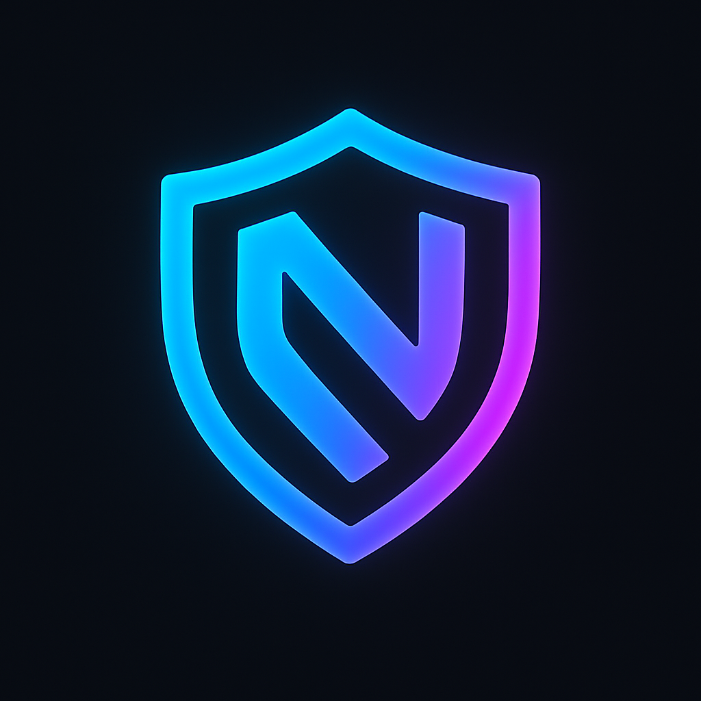

IA22 – LOGIC & ALGORITHM INTELLIGENT
Écosystème officiel de la plateforme
NetSecurePro IA
Modules IA intégrés
🔒 Sécurité IA
🤖 Détection automatique
📊 Analyse intelligente
🔗 Connexion API IA
Console de logique IA
Lancer IA